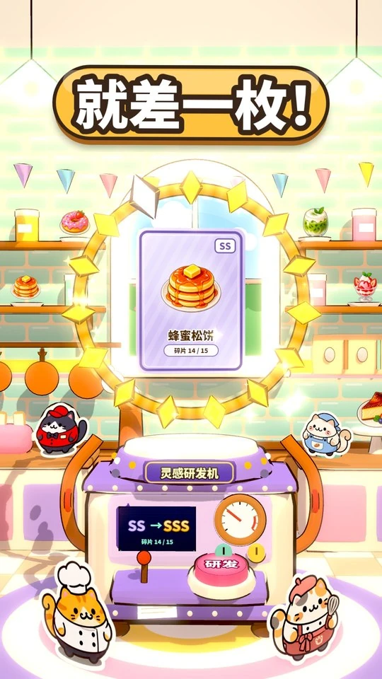

就差一枚！
宝石环亮了十四颗。蜂蜜松饼卡落下，最后一个空位还在闪。
猫猫餐厅 广告系列 02
One Fragment Short
蜂蜜松饼的菜谱还差最后一枚碎片。
芝麻翻开手札，这次能研发出 SSS 招牌菜吗？
STORYBOARD
《SSS！就差一点》 · 20.4 秒 / 10 镜

就差一枚！最后一颗宝石还在闪。跟着芝麻，从翻菜谱看到升阶揭晓。展开 10 个镜头收起节奏板宝石环亮了十四颗。蜂蜜松饼卡落下，最后一个空位还在闪。
芝麻趴在研发桌后，一口气翻过四页菜谱。
一声惊叹，灵感手札从书里旋转升起。
封条撕开，彩带散向两侧，一张卡背从手札里探出来。
猫爪金币走出 Z 字，刮开问号，露出一枚蜂蜜松饼碎片。
碎片飞回研发机。第十五颗宝石亮起，四只猫跳了起来。
猫爪按下粉色研发按钮。仪表转动，顶盘亮起一道光。
等级从 B 闪到 SS。两下心跳之后，黑金 SSS 卡翻到正面。
黑金卡悬在研发机上，厨房里的四只猫为新招牌欢呼。
黑金卡留在画面中央，招牌、丝带和餐厅入口依次落定。
CAMPAIGN VISUALS
立体道具配上猫咪立牌，蜂蜜黄和薰衣草紫贯穿三种版式。